转塘艺讯
已上线截图与录屏：转塘艺讯，2026 年 11 月；活动信息为站点原有内容。
把国美象山、浙音一带散落的演出、展览和讲座，收进一张地图、一份本周日程和一本日历。
对应：通知到不了
银发合作报告
从四件每天发生的小事开始，做老人愿意用、工作人员也省力的 AI 工具。
关于幕景宇宙
幕景宇宙是一家位于杭州的 AI Native 工作室，以人工智能为核心，借助对于文化、设计与空间的理解，创作解决当下真实问题的产品、游戏与智能体，让我们生活的城市更美好。
团队：林丽丽（艺术家 · 创作）、丁科智（AI Native 经纪人）。
其他成员：吴耀好（AI 研究员）、韩志州（商业与资源）。
关于这份报告
这份报告是把这套方法用在养老场景的一次尝试。数据标了出处，产品标现在做到哪一步。
我们还没有在养老场景做过试点，所以不写效果数字；合作从一次小规模试用开始。
为什么是现在
3.23亿
60 岁及以上人口
国家统计局
7 → 30万亿
银发经济规模
国家发改委
1.61亿
60 岁及以上网民
CNNIC
上网的老人已经过半；但在不上网的人里，60 岁以上仍占 53.6%（2025 年末）——线下那部分，正是社区要接的人。
不是老人不愿意用，是现在的服务和界面，默认他们会用。
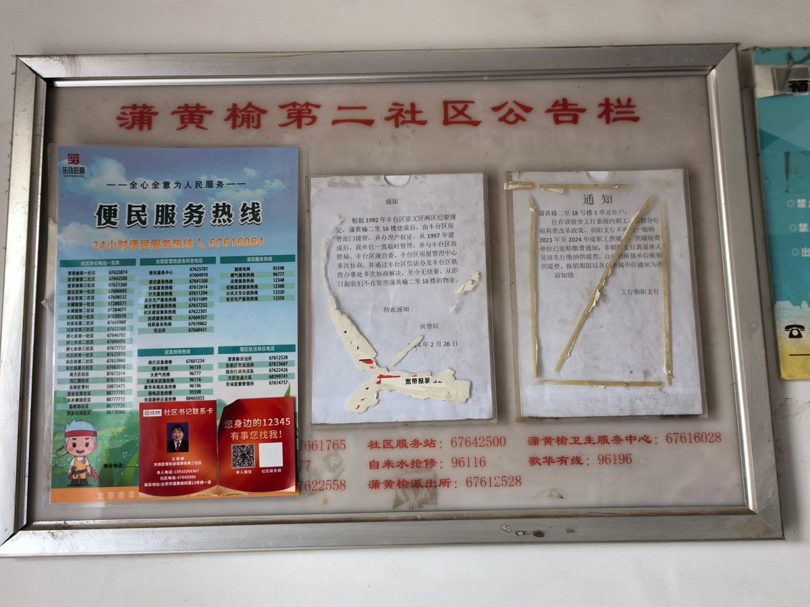
活动通知散在群里、公众号和公告栏，字小、刷得快，翻两下就找不到。
几点开始、在哪、要不要带东西——工作人员一天要回答几十次。
不是不听，是信息太多。子女转述一遍，又容易漏。
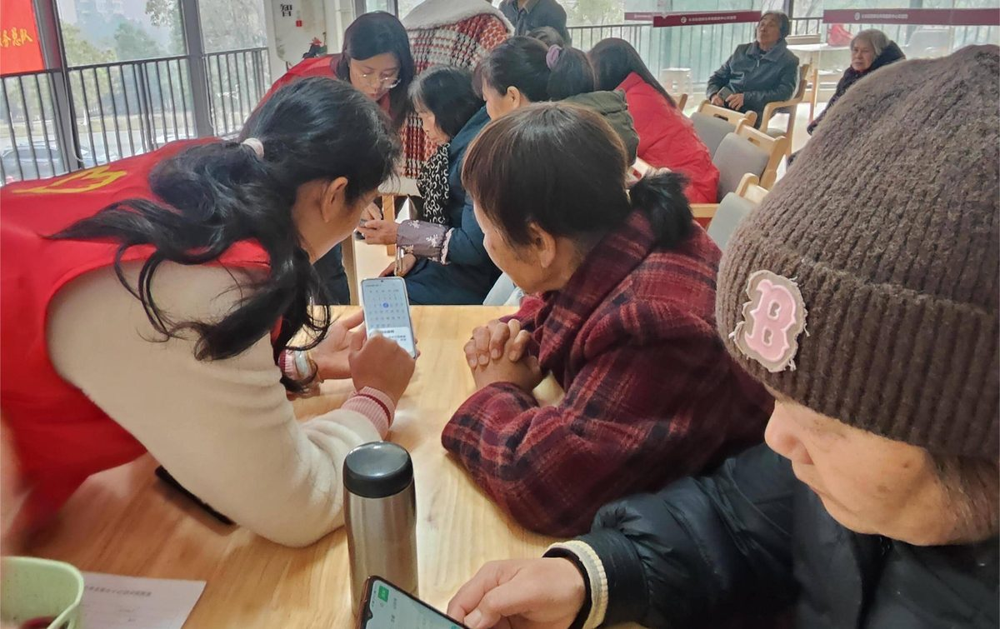
不敢乱按，宁可不用；问一次没听懂，就不好意思再问。
图：北京日报（公告栏）、甘州在线（服务窗口）、澎湃新闻《家族志⑥》（日历）、长龙街道社工站（手机课）。资料图，仅作场景说明。
六件已经做出来的东西，进度各不相同。下面的画面都来自真实产品和官网，没有改图；每件配一段无声短录屏，点开可以放大看、播放。
截图与录屏：转塘艺讯，2026 年 11 月；活动信息为站点原有内容。
把国美象山、浙音一带散落的演出、展览和讲座，收进一张地图、一份本周日程和一本日历。
对应：通知到不了
截图与录屏：幕景宇宙官网合作页，2026 年 11 月。
官网和飞书群里在用的问答智能体。能读群聊、文档、日历和多维表格；要动手前先发提案，等人确认；记忆按群分开。
对应：同一个问题答很多遍、说过了还是忘
截图与录屏：熟门熟路在线演示，2026 年 11 月；场地照片为演示内原有素材。
把真实场地做成可以预走的场景：从门口到二楼，第一人称走一遍。手机里看到的，和现场贴的图对得上；尺寸还在校准。
对应：知道有活动，却找不到地方
截图与录屏：幕景 Scendance 在线演示，2026 年 11 月。
把平面图变成可编辑的场地，用真实尺寸的桌椅、吧台、舞台摆布置；说一句需求，AI 先出一版初稿，同组的人一起改。
对应：活动布置反复改、每次从头来
截图与录屏：推鉴线上体验版，2026 年 11 月；使用产品自带的测试账号，未改动任何内容。
把写通知最容易出错的三件事——信息记错、语气不对、说了没依据的话——收进一条流程：AI 一次只问一个问题，引用由程序回填，写完再逐条回查。
对应：通知写不准、反复返工
截图与录屏：幕景宇宙官网「小鸡宇宙」作品页，2026 年 11 月；角色设定图来自小鸡宇宙产品说明。
官网上的一层互动装置：点空白处下一颗蛋，孵出七种小鸡，会走、会说话。怎么点都不会错，先让人愿意点。
对应：怕点错、怕麻烦人
先看真实里已经发生过的事：五件，三件在杭州，一件在上海，一件是装了没人用的反例。看完再回到我们打算怎么接。陈阿姨仍然是虚构的，这一节是设计案例，不是试点记录。
两件关于“看不到、去不了”，两件关于“社区和机构怎么管”，一件提醒我们别做成摆设。图片都是报道原图，点一下可以放大看细节。
杭州拱墅 · 2025
拱墅区养老服务中心里，老人戴上 VR 眼镜，面前架着一台 360° 相机。这个项目叫“时光档案馆”：给百岁老人拍生活影像和家庭故事，做成能走进去的“人生图谱”；另有一部短片《时光简笔画》，手绘贴图配实景拍摄。区民政局支持、一家社会组织承办，已经办了十余场活动。
可借鉴“云旅游”的内容不是买来的片库，是为这个人现拍的；现场要有人帮着戴、坐在旁边一起讲。
不能照搬拍摄、头显都要钱，一次只能服务几位老人；我们不做通用片库，也不承诺“看了心情好”。
事实：杭州网 2025-07-31 报道 · 图片：潮新闻（浙江在线图片库）2025 年 8 月配图
上海徐汇 · 2021
防疫期，徐汇区第三老年福利院里出不去的爷爷奶奶，靠一副 VR 眼镜“环游世界”：一段影像、一次一位、工作人员在旁边扶着设备。这是那段时间被反复报道的一次院内活动。
可借鉴先解决“出不去”，再谈“看世界”；设备由人一对一操作，不发给老人自己摸索。
不能照搬通用风景片对具体的人没有指向性；戴头显可能头晕，时长要短，且要本人愿意。
事实与画面：021 视频（新浪财经转载），2021-12-23 · 画面为视频帧，保留原字幕
杭州拱墅 · 和睦社区 · 2022
和睦社区 60 岁以上的老人有 2515 户，占户籍人口三分之一。社区用“阳光和睦”小程序发活动：一条活动写清时间、地点、能得多少积分、限多少人，一场“银龄互助培训班”31 人报了名。签到和参加活动攒下的积分，可以在移动营业厅、养老食堂、社区超市、理发店换服务，当时参与积分的居民 283 人。家里智能水表两天没走字，社区就会打电话确认老人安全。
可借鉴“通知”不是发一条消息，是一张看得清的列表：名额、地点、去了有什么好处；和安全提醒绑在一起，才有人天天打开。
不能照搬背后是社区、银行、物业一起做的；我们只提供这一页界面，不碰积分资金，也不代替社区做决定。
事实：中国日报网 2022-08-17 报道 · 图片：该报道配图（培训会现场与小程序活动页）
杭州西湖区 · 泰康之家·浙园 · 2026
2026 年 10 月，泰康之家·浙园在西湖区小和山开业，约 1300 个养老单元，一期开放约 650 户。从 7 月开放入住到报道时，已累计开展 48 场活动、开设近 30 门课程：油画、小提琴、茶艺、剧本杀，还有 AR 课和智能手机课，教老人怎么就诊、怎么挂号、怎么购物。社区门口一块电子屏连着“长寿社区智慧平台”，上面是在住居民文化娱乐、运动健康、营养美食的实时数据，也连着老人胸前的定位报警卡。
可借鉴活动要排成一张有名额、有老师、有场地的课表；教手机就教她马上用得上的那三件事：就诊、挂号、购物。
不能照搬这是保险支付加持续照护的生意，一个社区上千个单元，街道和居委会学不起。要做的是把“课表”和“看得懂的屏”缩到几十人的尺度。
事实：潮新闻 2026-10-21（西湖区委宣传部供稿）· 图片：该报道中的浙园实景照片
上海 · 一键叫车智慧屏 · 2024
2021 年起，“申程出行”在上海做打车适老化改造，把“一键叫车”智慧屏推进社区，点位已达千余个。2024 年 8 月记者蹲点回访：有老人没听说过这东西；有的屏积了一层灰；长宁区一个点位安在社区服务站二楼，工作人员说基本没人用。真上手的人卡在第一步——刷脸要绑支付宝账号，手机号要输验证码，绑定条款的字比屏幕上其他字更小；叫到车以后想取消，还得重输一遍手机号。有老人试完说：还是让子女帮忙打车更快。
可借鉴这条是给我们自己的提醒：入口要在她每天走得到的位置；第一步不许出现账号、验证码、绑定；一次只让她按一个键。
不能照搬它难在派单和司机端的配合，不是一个界面能救的；我们不做叫车，也不承诺解决出行。
事实：人民网上海频道 2024-08-19 报道 · 图片：新浪 2021-06-16 报道配图
这些入口已经存在，我们要接进去，不是另开一个。
西湖区本身就在做这些：区里的报道给出几个数——3 个体验中心（银发西溪 Mall、区社会福利中心、翠苑一区 AI 康养社区）服务过 12 万人次；30 余个体验点把认知筛查、药膳教学、银龄集市送到身边；翠苑一区率先为 200 名高龄独居老人做慢病监测和探访关爱；留下街道把社区食堂升级成康养生活驿站，推“碰一碰”送餐。
把上面看到的接过来，一位老人一下午会经历什么。每一段配一张示意图（AI 绘制，不是现场照片），下面写清楚：真实里谁已经这样做，我们手上什么是现成的，什么要新做。
她怕麻烦人，也怕问了两遍还记不住。
陈阿姨，68 岁，独居，女儿住城西。手机是女儿换下来的，她只会微信、视频和拍照，字一直放到最大。
不用问人，先看列表。
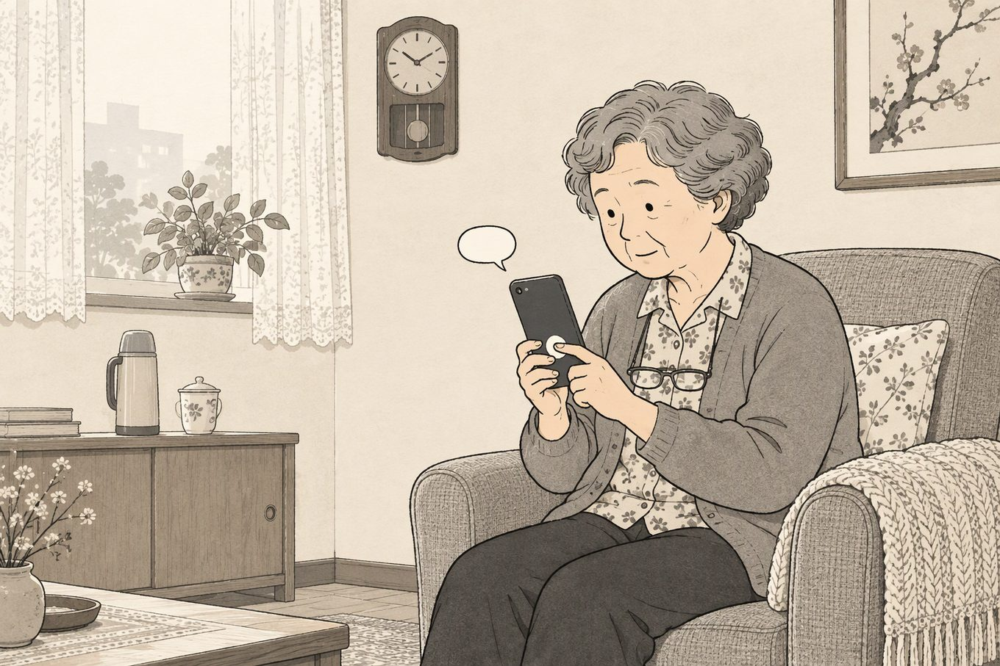
按住手机上的一个按钮，说：“今天下午有啥活动？” 手机答：“三点，二楼活动室，越剧赏析，还有三个名额。”同时把这条放进她自己的日程。
真实里：和睦社区把活动一条一条摆在小程序里，写清时间、地点、名额和积分，一场培训班 31 人报名。
现成Mimi 的对话能力、转塘艺讯的活动数据 要新做一个只装社区事的语音入口，按住就说话
手机和眼前对得上。
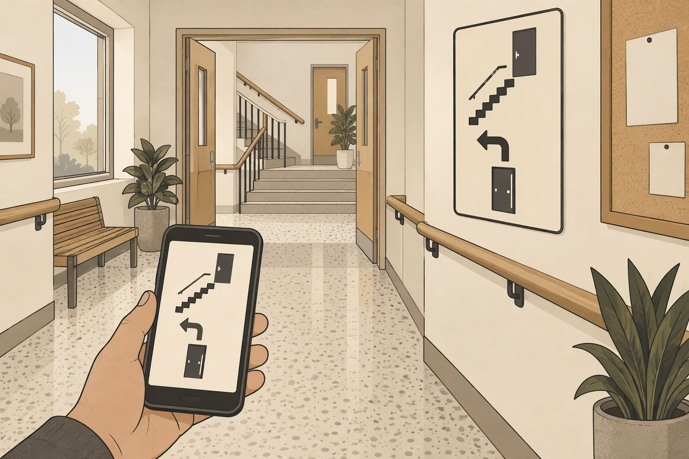
点开“怎么走”，看一段第一人称路线：进门、左转、上二楼、第二个门。现场门口贴同一张图。
反面提醒：上海的智慧屏卡在第一步——要绑账号、要输验证码、字太小，老人试完说“还是让子女帮忙更快”。
现成熟门熟路的在线预走 要新做真实院区的路线采集，以及能贴在现场的大图
内容都是现拍的，旁边都有人。
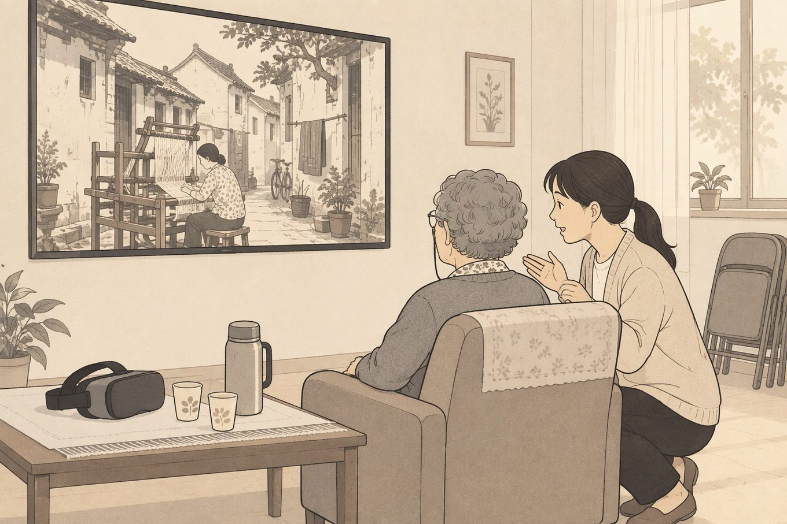
去年冬天摔过一次以后，她不太敢出远门。社区活动室的大屏上放着一段为她自己拍的画面：1980 年那条巷子、那台织机，是工作人员拿 360° 相机在原地拍的；有人坐在她旁边，边看边讲。愿意的话，也可以戴上头显。
真实里：拱墅给百岁老人拍“时光档案馆”，徐汇的养老院在防疫期让老人戴 VR “走出去”。
现成熟门熟路的空间采集与三维画面 要新做为一位老人现拍的 360° 内容、一次只服务几人的现场流程；戴头显可能头晕，时长要短，画面须经她本人同意才使用
她不用打字。
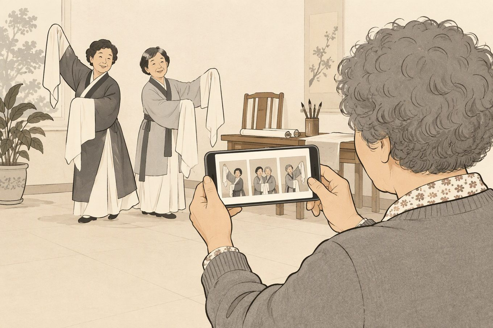
活动结束，她拍了几张照片。点“发给女儿”，手机把照片排成一张图，写上日期、活动名和地点。
真实里：浙园把 48 场活动、近 30 门课排成课表，居民的作品挂在公共空间里；小年糕让老人三步做出一段能发到家庭群的影集。
现成过往活动物料里的图片排版与生成能力 要新做一键成图、一键分享的页面，照片须经她本人同意才使用
于是下周加一场，把名额从 12 个放到 15 个。
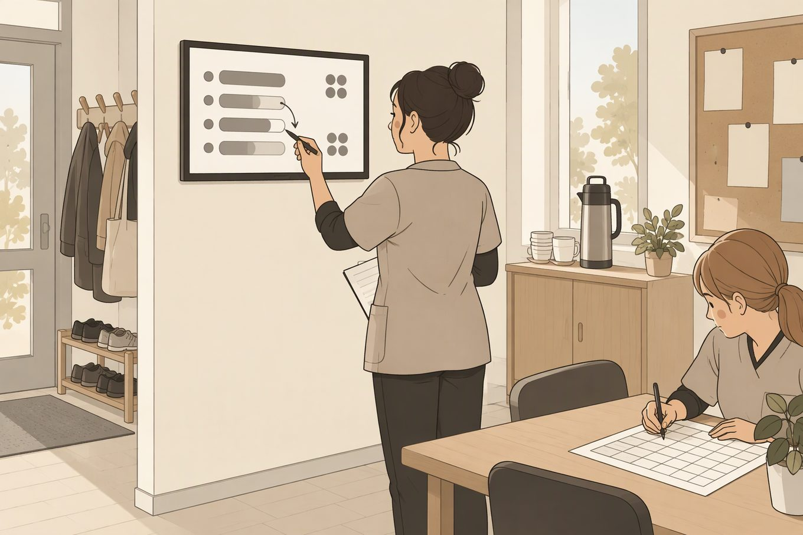
工作人员看到一页小屏：越剧被问 12 次，到场 9 人，3 人没报上名。
真实里：和睦社区的数字驾驶舱已经在算 2515 户高龄老人、照护等级和预警；浙园门口的屏连着老人胸前的定位报警卡。这些屏管的是安全，还没有一块管“下周该排几场、该排什么”。
现成转塘艺讯的活动与日程数据 要新做给工作人员看的一页小屏，只留“该加什么、该减什么”
两国都比我们早走二十年。答案不能照搬，但能看清哪些事该政府做、哪些适合小团队做。
把照护变成一张全民的保险网
把社区做成服务前台
把数字能力当基础设施，不是让老人自学。
两国其实在做同一件事：原地养老，不把老人搬去远处；先修最后一公里，有人告诉他今天有什么、怎么走。
保险、评估、医疗判断是国家和机构的事，我们不碰。
我们只做体系里最薄的一层：信息到人、路线到门、重复问题交给机器、照片到家属。日本和新加坡都花了十几年和大量财政，我们没有那个量级，只做轻的、当天能用上的那一小块。
前面解决的是“当天能用”，这一节解决“为什么还要再来”。研究给的答案不神奇：熟悉的东西、有人一起、没有倒计时。
18 项研究里，15 项进入合并分析。认知障碍老人玩严肃游戏，和“不玩或只看别人玩”相比，非言语记忆和工作记忆有小幅改善；言语记忆没有显著变化。作者对证据质量的评价不高。
Abd-alrazaq 等，JMIR Serious Games，2022
日本一家养老院的 5 位老人，15 周里各自玩《太空侵略者》，4 人纳入分析。数字记忆、词语记忆和心理旋转有改善。样本极小，只能说明“愿意玩、能坚持”，不能说明能防失智。
Yorozuya 等，BMC Geriatrics，2024
40 位 50–85 岁的人，和年轻搭档一起玩 8 次，总结出 45 条设计规则：去掉倒计时、用熟悉的文化符号、允许降速和提示、别把老人画成消极静止的样子。10 项体感游戏研究的综述里，8 项用 Wii，多数报告孤独感下降、社交连接增加；9 项孤独感研究也指向同一件事：起作用的是社交互动，不是屏幕本身。
Lee 等，JMIR Serious Games，2021；Li、Theng 等，JMIR，2018；Healthcare，2025
空心点为统计上不显著；证据质量低，不能替代治疗。
只靠线上投放，找到的多半不是老人。
还有一个数字值得看：一款做代际互动的社交游戏，在社交媒体上触达 19.2 万人，最后 1,363 次下载、155 人入组，转化率 0.08%，其中 65 岁以上只占 21.9%。要在社区里、有人当面邀请，才招得到。
前四个是产品和项目，最后一个是研究机构；共同点是先给了一个具体的理由，让老人愿意坐下来。
日本 · 2005
把算数、朗读、找不同包装成“每天 10 分钟测一下脑龄”，用触屏和麦克风作答。到 2007 年全球卖出超过 1000 万份。它不是为老人做的，却让“每天练一下”变成了一代人的习惯。
可借鉴每天一次、有分数、看得见进步；把训练藏在一个熟悉的动作里。
不能照搬要买一台掌机；我们也不承诺“变聪明”或“防失智”。
封面：任天堂，来源 Wikipedia（合理使用）
中国 · 2017
微信小程序：选模板、放照片、配音乐，三步做出一段影集，直接发到家庭群。上线一个月，用户从 1000 万涨到 2000 万；2019 年总用户超过 2 亿；2021 年公司称有 5 亿用户、千万日活。
可借鉴老人要的不是“学会做视频”，是一个能发给孩子、拿得出手的成品。
不能照搬模板加流量的生意，内容会同质化；我们不做广告和拉新。
图片：新京报 2024-05-27 报道配图（小年糕）
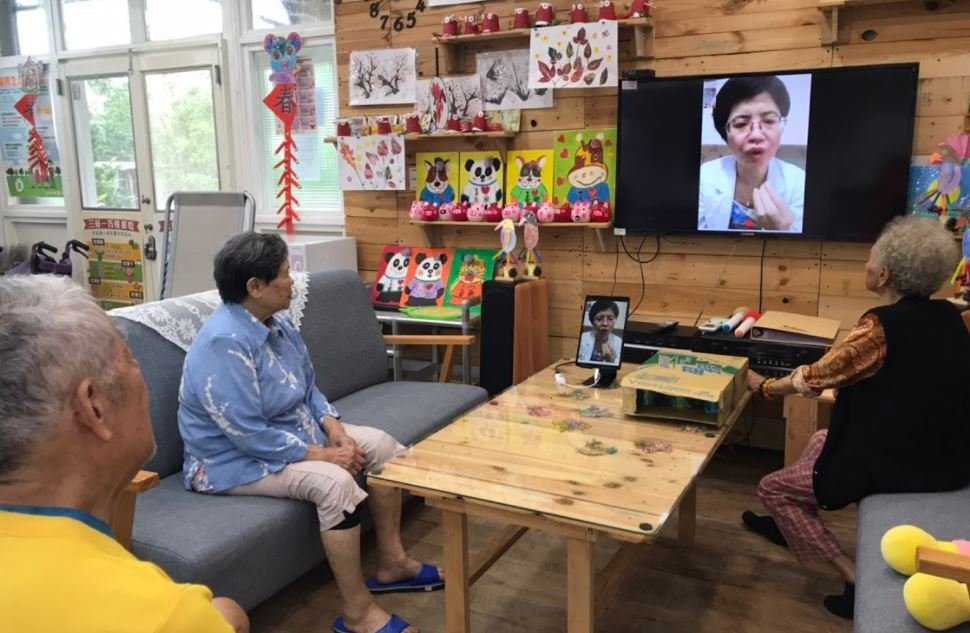
台湾 · 社区据点
把线上专家课送进偏乡社区据点：据点把长辈召集到活动室，大屏放专家的直播课，长辈跟着做运动、提问。课程覆盖运动、失智照护、用药和三高饮食；官方商店页现在写 1600+ 位线上专家、15 个长照领域。
可借鉴社区据点就是“影院”和“班主任”；线上内容必须有人在线下组织。
不能照搬背后是护理专业和机构合作；我们不做医疗建议，也不替代治疗师。
照片：AnkeCare《科技照护行不行，偏乡社区 Wa（Care）啦》，2021
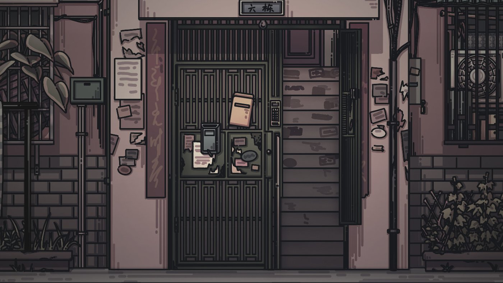
中国 · 2022
最初是中国传媒大学的毕业设计，后来由帧间工作室做成正式游戏。玩家用一位阿尔茨海默症患者的视角，在同一个房间里反复走迷宫、收拾行李，看记忆怎么一点点漏掉。2022 年 9 月上线。
可借鉴让家属“体验”遗忘，比一篇科普文章更有说服力；适合家属场，不适合当老人的日常活动。
不能照搬严肃题材要有专业顾问，不能做成猎奇；节奏慢、指向强，老人不一定玩得动。
画面：Steam 商店页
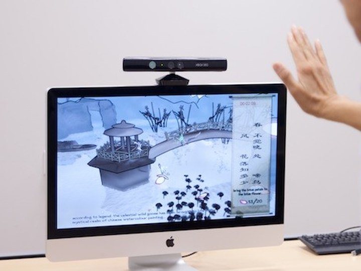
新加坡 · 南洋理工
南洋理工与英属哥伦比亚大学合办的老龄研究中心，创始主任是苗春燕教授。他们把体感游戏同时当作身体和认知训练：摄像头读老人的动作，系统按表现调难度；长期记录用于早期发现，也用于帕金森、中风和失智的康复。团队里有临床神经科和认知神经科学的医生，和医院一起定规则。
可借鉴游戏只是外壳，后面是“看懂表现—调难度—再看一次”的闭环；工程和临床一起定什么算做对了。
不能照搬要摄像头、大屏和临床合作；我们不做诊断，也不采集健康数据。
画面：NTU LILY 官网（Silver Games） · 看 1 分钟展台演示
一个把游戏送进社区，一个在实验室里看老人怎么用界面；共同点是先看老人实际怎么做，再谈设计。
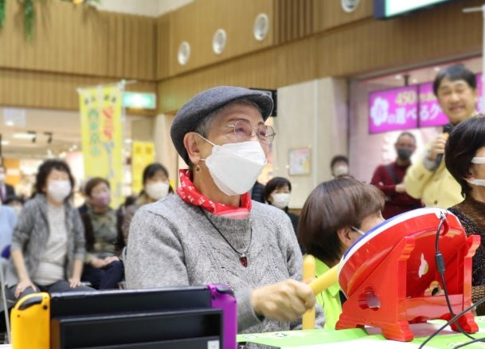
东京 · 西东京市 × 东京大学
2016 年，西东京市和东京大学高龄社会综合研究机构签合作协定，先在全市推行“东大式衰弱检查（frailty check）”。2022 年起，健康 e スポーツ（电子竞技）成为市里的预防事业：培养 61 名“健康数字指导士”，在社区会馆和公共设施带课，累计参加超过 1000 人。
2024 年 3 月，东大团队做效果验证：参加后，同代交流意愿提高 38.4%，每周外出 5 次以上的人增加 28%。
可借鉴大学负责怎么测，市政府负责在哪开课，指导员从本地老人里培养——活动才留得下来。
不能照搬靠多年财政和持续评估撑着；我们做不了市政级项目，只能从一个活动室开始。
照片：西东京市 2024-11-26 新闻稿（PR TIMES）
东京 · 东京科学大学（原东京工业大学）
他做老年技术学（gerontechnology），研究老人用触屏、读保单、上网办事时，哪里慢、哪里容易错。2005–2008 年的课题，就是把老人的认知、行为和情感差异，整理成产品和环境的设计指引。
可借鉴把“老人学不会”改写成“这个界面没有按他的认知来设计”。
不能照搬这些是实验室和问卷里的结论；换到一个具体的活动室，还得重新试。
来源：梅室研究室、KAKEN 研究课题
游戏研究给的是交互原则：不计时、不扣分、先让人愿意点。落到社区，我们想做四个能留下来的工具；都还没有上线，按先做哪一件排。
把群消息、公众号和公告栏照片里的活动，收成一张本周日程：时间、地点、还剩几个名额。老人看活动室大屏或收一张图，工作人员能看到哪场被问得最多。
为什么先做：转塘艺讯已经在做同一件事，换一个社区的数据源就能跑；不需要老人装新应用。
一台放在活动室的平板或音箱。按住说本地话就能问：今天有什么活动、在哪、要不要带东西。只答社区自己的事；答不上来就说不知道，并记下来让工作人员补。
为什么第二个：不用打字、不用找图标；老人问过一次没被笑话，下一次才敢再问。
活动结束，工作人员拍几张照片、说两句话，生成一页回顾：来了多少人、大家反复问什么、下次该加什么。照片和声音用前逐个征得同意。
为什么值得做：把工作人员每周重复写的总结，变成一次口述；下一次排活动也有依据。
老人带一张老照片、说一段方言或家常，生成一段 30 秒的短片：老照片动起来，配她自己的声音。子女可以回一段声音，拼在一起。
为什么放后面：要处理肖像、声音授权和生成质量；但这是老人最愿意带回家给别人看的东西。
这些都是设计提案，不是已验证的产品。
上面的研究只能说明这类活动可行，不能证明我们做出来就有效。真正有没有用，要看试点里老人还愿不愿意来第二次。
都从一件具体的事开始，不卖平台，不做大而全的系统。
一场活动，让老人自己做出一张画或一段影像带走
把一件重复的事交给 AI：通知、答疑、活动记录
每月一批活动素材、怀旧影像、社区故事
不先谈大合作，先小范围试一次。试点不通过就停，不硬推。
我们负责工具、内容和现场带一遍；机构负责场地、信任和活动组织。出现答不上来的问题，转人工，并留下记录。
下一步：欢迎先来工作室看一次现场演示。
再决定要不要试。微信 endTree-26 · 官网 mujing-universe.pages.dev
图片：Brain Age 封面来自 Wikipedia（合理使用）；小年糕配图来自新京报 2024-05-27 报道；WaCare 现场照片来自 AnkeCare 2021-02-17 报道；《6栋301房》画面来自 Steam 商店页；LILY 游戏画面来自 NTU LILY 官网；西东京市活动照片来自该市 2024-11-26 新闻稿。视频封面与片段来自 SWITCH Singapore 的 LILY 展台视频。“一个老人的下午”五张配图依次来自：潮新闻（浙江在线图片库）2025 年 8 月“时光档案馆”报道配图；021 视频 2021 年 12 月上海徐汇养老院报道的视频帧（保留原字幕）；中国日报网 2022-08-17 和睦社区报道配图；潮新闻 2026-10-21 泰康之家·浙园实景（西湖区委宣传部供图）；新浪 2021-06-16 一键叫车智慧屏进社区报道配图。“陈阿姨的下午”五张是 AI 绘制的示意图，画的是虚构人物与设想中的场景，不对应任何真实个人、机构或现场，图中不含文字。图片与视频仅作案例说明，版权归原作者。
幕景宇宙 · 杭州 · 丁科智 / 林丽丽 · 2026 年 11 月